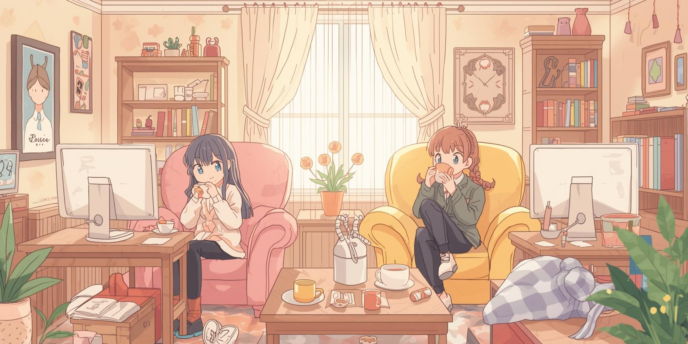

Crie seu espaço acolhedor, só para convidados
Em Laços, cada cantinho é organizado em canais temáticos, para que vocês possam trocar ideias, compartilhar novidades ou simplesmente bater um papo sobre o dia, sem bagunçar tudo em um único chat.
Sempre perto de quem importa
Entre em um canal de voz para relaxar. Seus amigos podem ver que você está online e chegar para conversar, sem precisar de convite formal.
Para grupinhos ou para multidões
Modere sua comunidade com carinho, personalize o acesso dos membros, crie canais secretos e dê papéis especiais para pessoas queridas.
Conexão estável para momentos especiais
Áudio e vídeo de altíssima qualidade, para que vocês se sintam juntos, mesmo estando longe. Dê um sorriso por vídeo, compartilhe a tela ou assista algo com todo mundo.
